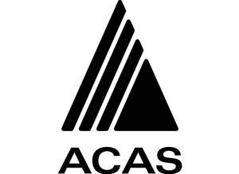

Trade Mark Journal No.2026/012 20 March 2026
UK00004347940 2 March 2026 (7,9,37,42)

- Class 7
- Construction machines; Industrial robots; Robots for use in industry; Transportation robots; Robots for industrial use; Industrial robots for use in the handling of workpieces; Robotic mechanisms for transportation; Robotic arms for industrial purposes; Robots for feeding workpieces.
- Class 9
- Robotic Process Automation [RPA] software; Application software for robot; Industrial automation software; Computer hardware for use in computer-assisted software engineering; Mechanical engineering software; Software programmable microprocessors; Simulation software for use in digital computers; Industrial software; Computer programs for use in the autonomous navigation of vehicles; Artificial intelligence software for vehicles; Civil engineering software; Computer programs for use in autonomous control of vehicles; Computer software for computer aided software engineering; Artificial intelligence and machine learning software; Robotic electrical control apparatus; Computer applications for automotive control; Electrical engineering software; None of the aforesaid being laboratory apparatus or scientific instruments.
- Class 37
- Rental of construction plant; Rental of plant for construction; Hire of construction plant; Construction; Construction of greenhouses; Industrial construction; Construction of factories; Installation of plant; Plant installation; Construction of manufacturing and industrial buildings; Factory construction; Building construction; Construction of buildings; Buildings (Construction of -); Rental of tools, plant and equipment for construction, demolition, cleaning and maintenance; Building construction and repair; Building, construction and demolition; Hiring of construction machinery; Erection of formwork for building and construction; Hire of construction machinery; Residential construction; Supervision (Building construction -); Supervision of building construction; Machinery for use in construction (Rental of -); Rental of machinery [construction]; Rental of construction machinery; Construction of steel structures for buildings; Building construction and demolition services; Construction supervision of buildings; Construction of houses; Commercial construction; Construction of property; Construction of buildings and other structures; Construction of parts of buildings; Building and construction services; Building construction services; Development of land [construction]; Heavy engineering construction; Buildings (Waterproofing of -) during construction; Building construction consultancy; Leasing of construction equipment; Custom building construction; Steel structure construction works; Hiring of construction equipment; Rental of construction and building equipment; Custom construction of buildings; Buildings (Fire-proofing of -) during construction; Residential and commercial building construction; Building construction supervision services for building projects.
- Class 42
- Design of industrial plant; Construction design; Development of construction projects; Product development for vehicle construction and for vehicle body construction; Research relating to construction machinery; Engineering services relating to robotics; Design and development of computer software for vehicle simulation; Computer software engineering; Design and development of computer software for logistics; Design, development and programming of computer software; Engineering and computer-aided engineering services; Design and development of computer hardware for the manufacturing industries; Development of computer hardware for the manufacturing industries; Research in the field of artificial intelligence technology; Design and development of computer hardware for the manufacturing industry; Research and development of computer software; Computer programming and software design; Development of computer software for use with computer-controlled switching systems; Design of computer hardware for the manufacturing industries; Design and development of computer hardware and software; Design and development of computer software; Computer software design and development; Computer-aided engineering design services; Design and development of computer software architecture; Engineering services in the field of building technology; Development of computer hardware and software; Rental of science and technology equipment; Development of computer software; Design and development of computer hardware; Technical project studies in the field of computer hardware and software; Research in the field of computer programs and software.
Byron Howe